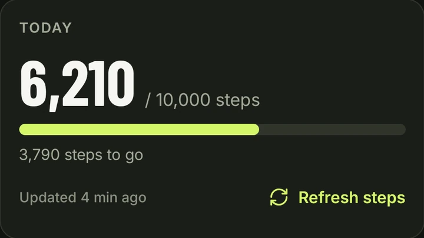
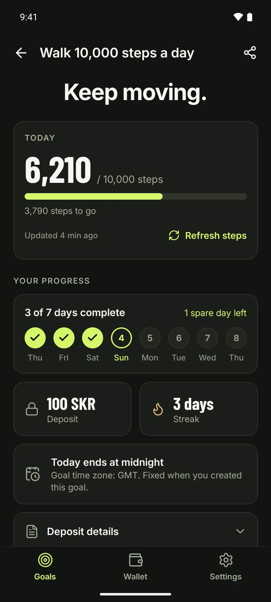
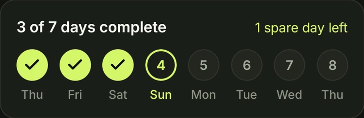
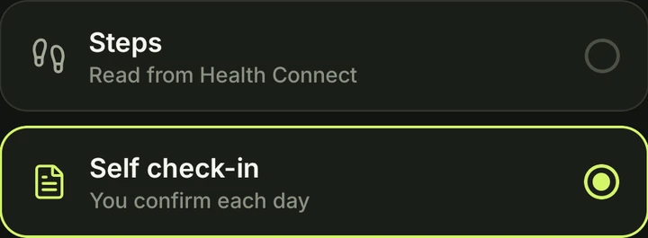
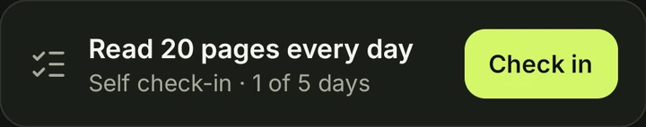
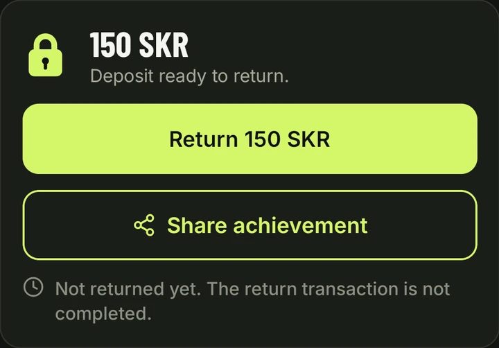
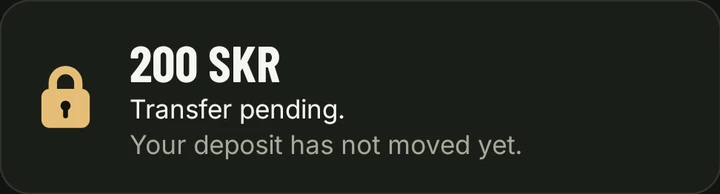
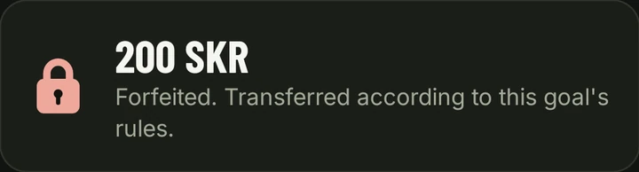

Daily steps
Lock-In reads your step count from Health Connect on your phone. Steps entered by hand don't count. When the day's target is reached, your phone records the day on Solana.

Set a daily goal. Lock a deposit. Complete your goal to get it back.
Miss the requirement and your deposit is forfeited.

Choose daily steps or a personal goal, how many days it runs and your deposit. Approve your deposit in your wallet.
Complete your goal on the required number of days. Every goal includes one spare day, so a single missed day doesn't end it.
Complete the goal and your full deposit is available to return to your wallet. Miss it and the deposit is forfeited.
Example: complete 7 days within an 8-day window. One spare day is included. Goals can also run for 3, 5 or 30 days, always with one spare day.

Lock-In reads your step count from Health Connect on your phone. Steps entered by hand don't count. When the day's target is reached, your phone records the day on Solana.

For any other habit: reading, training, no sugar. You confirm each day yourself, on your honor. A check-in can only ever return your own deposit.


The deposit is held by the Lock-In program on Solana and paid out by the rules stored with your goal when you created it.
Your full deposit is available to return. Tap Return in the app and the program sends it back to your wallet. There is no deadline for this.

After the goal ends, late data can still arrive for 24 hours. After that window a goal that wasn't met can be settled: the deposit goes to the recipient set when the goal was created, once that transaction is confirmed. Until then the app shows the transfer as pending.


Every goal includes one spare day: you need N completed days within N + 1 calendar days, so one missed day is fine. A second missed day means the goal can no longer be completed (steps that sync late still count for their day). The calendar rules
On your phone. Lock-In reads step records from Health Connect, ignores steps entered by hand and counts a walk recorded by both your phone and a watch once. The Solana program doesn't see your steps; it records the days your phone reports as complete. Types of goals
The app tells you, instead of counting zero steps. Restore access in Health Connect to sync your steps again. The goal's deadline still applies, and steps that sync late still count until 24 hours after the goal ends. Step troubleshooting
As soon as the goal is complete. Return it from the goal or from the Wallet tab; there is no deadline. Returning a deposit
Connect the same wallet on the new phone and your goals are found on Solana. Open each active goal, tap Link this phone and approve the link in your wallet. Then the new phone can record your days. New phone or reinstall
Yes, on Solana mainnet with SKR. Get it on the Solana dApp Store on your Android phone (or search for Lock-In there). Each goal takes a deposit from 100 to 10,000 SKR. Lock-In is new and its program is still upgradeable by the developer, so only lock an amount you are prepared to lose. Current status